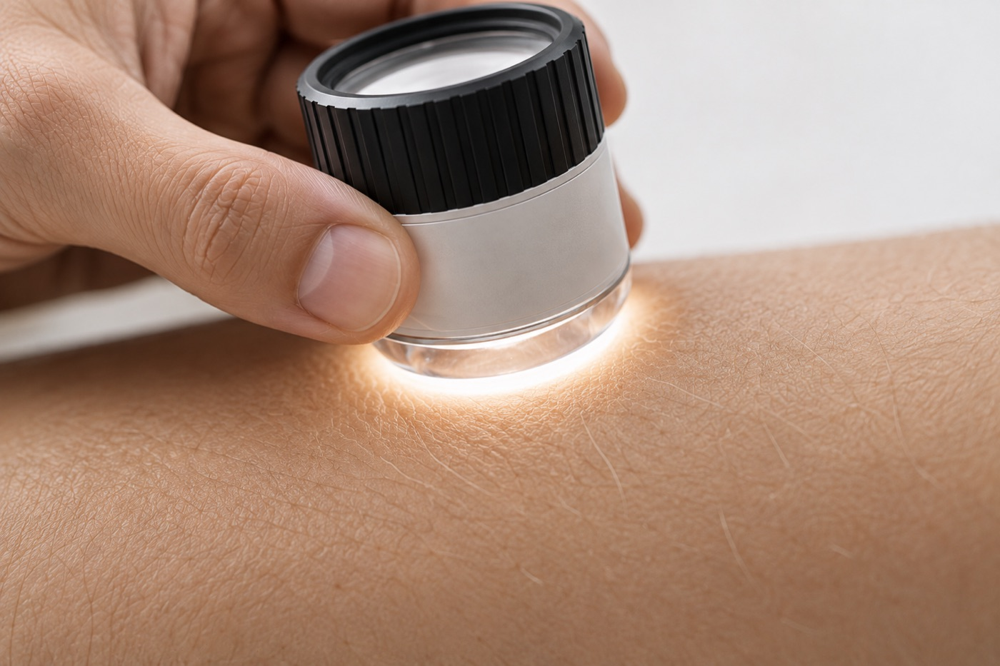
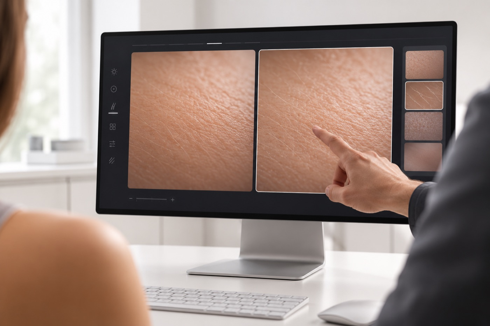
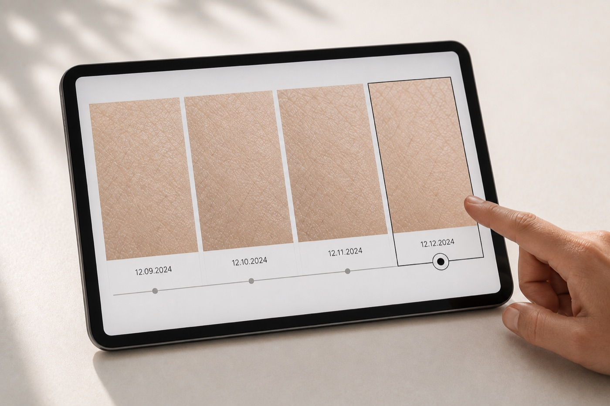

01Um ecossistema de equipamentos e software
para análise de pele e capilar.
Mais precisão no diagnóstico, mais segurança na conduta, mais prova no resultado.
Para dermatologia clínica e estética
Quero na minha clínicaPrecisão muda tudo
o que vem depois.
O que se vê define o que se faz. E o que se faz define o resultado.

02Segurança na conduta

03Prova do resultado
Imagens ilustrativas.